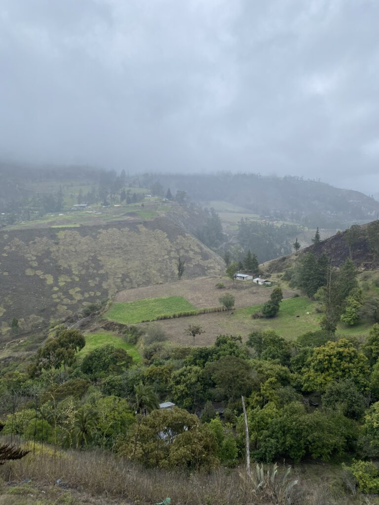
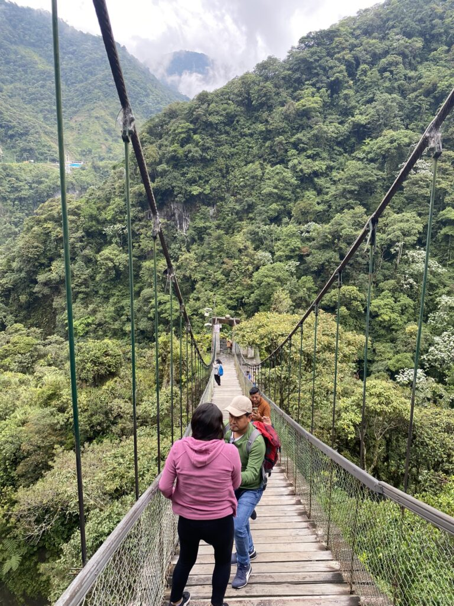
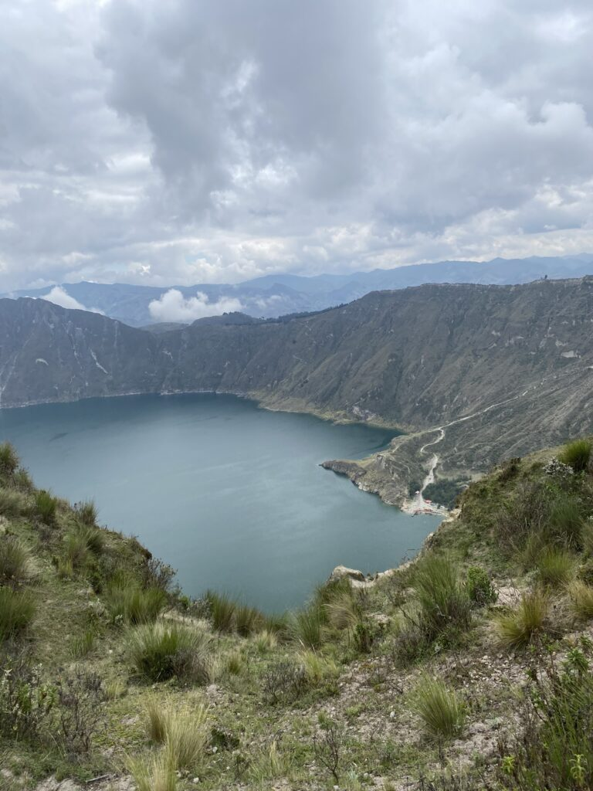

Op een middag is het droog als ik afgezet wordt aan een grote bergweg. Ik kijk in de vallei en zie Alausí. Dit is de bijzonder uitgekozen uitvalsbasis van Luc en Ier. Op een dorpsplein met een zondagmarkt en een paar restaurants na is er vrijwel niks. Het authentieke treinstationnetje dat met pensioen is, zou je een toeristische attractie kunnen noemen. Maar er zijn bergen en een keuken en dat is voor mijn twee Scandinaviërs genoeg. Na een nacht Amsterdammertje spelen in het gehucht, inclusief bezoek aan de meest troosteloze kermis ooit, vertrekt de rode naar het platteland om te boeren en de blonde naar huis. Na drie ontmoetingen op dit continent zie ik ze nu toch echt thuis pas weer.
Ik besluit de populairste hike in de omgeving te lopen en wauw; geen verdord plastic afval langs de route. In Ecuador is dat ondanks de hoge bevolkingsdichtheid blijkbaar doodnormaal, in tegenstelling tot bij de buurtjes. Ik maak al snel werderkennis met de plotselinge weersomslag. Op 1/3 van de tocht over kleine bergpaadjes langs steile afgronden reikt de stortregen tot in mijn onderbroek. Doorlopen maar, het uitzicht bij het eindpunt moet waanzinnig zijn. Niet dus. Na veel uitglijpartijen en geen andere geen levende ziel op de route, wacht een dikke mistlaag bij het uitzichtpunt. Een klassiek verloop, dat ik nog wel ken van Azië. Terug in het dorp vallen me de reclameposters van de gemeenteraadsverkiezingen op die - niet zo verrassend - gedomineerd worden met witte hoofden in dit overwegend bruine land vol inheems geklede mensen. Peru kampt ook al met een minimale Spaanse elite die is blijven hangen en de dienst uitmaakt. Het mengelmoesje wordt gecomplementeerd door de Amerikaanse dollar als valuta en de alom vertegenwoordigde gele New Yorkse taxi.

De groene bubbel
De volgende dag reis ik naar Baños, vernoemd naar de omliggende baden, niet naar de badkamers (vermoed ik, hoop ik). Een dorp vertrouwend op toerisme, en terecht, want de omgeving is één grote buitenspeeltuin van outdoor adventure. Maar ook locals zijn er zat, in schooluniformen of achter de counter van hun winkel. Op het dakterras van het hostel blijken Engelsen wederom de grappigsten der aarde. Al kunnen ze ook fucking annoying zijn, maar gelukkig verkiezen die exemplaren een reis naar het oosten. Het wordt dus veel te laat, maar ik moet en zal de volgende ochtend mijn Hollandse benen laten spreken. Op de mountainbike langs zeven watervallen blijkt hoe een fietsconditie in drie maanden tijd bijna volledig kan verdwijnen. Maar waarom zijn hier geen mondiaal gerespecteerde wielrenwedstrijden? De ogen krijgen zoveel meer schoonheid te incasseren dan bij de uitgekauwde klassieker van Brugge naar De Panne. Echt.
De laatste waterval is reusachtig en staat je niet toe dichterbij te komen zonder doorweekt te raken. Ik kan geen camera meer zien, maar een groep Chinezen vraagt me om het gezin gezellig op de foto te zetten. Ik doe alsof ik wegren met hun gloednieuwe smartphone en grijzend zet ik ze vervolgens toch op de foto. Bij het inleveren van het toestel kijkt papa alsof hij me van de 60 meter hoge afgrond wil donderen.
Het moest er weer een keer van komen, al had ik gehoopt dat ik met de salmonella genoeg kwelling had doorstaan. Hoe ik de canyoning-tocht heb overleefd is me een raadsel, het toilet is voor de rest van de dag mijn territorium. Met een brandende maagzuurvulkaan klaar om uit te barsten en op hol geslagen darmen klauter ik uren van watervallen tussen grote stromen ijskoud water naar beneden. Compleet vertrouwend op een touw en een tuigje val ik 40 meter naar beneden tussen de groene rotspartijen. Heel vet, maar de lichamelijke malaise overheerst. Gelukkig is de lijdensweg na vierentwintig voorbij en is mijn laatste dagje Baños er eentje van ontspanning. In de hotsprings slaap ik bij, terwijl de Ecuadorianen als zeehonden spetteren en me wakker schrikken door vlak naast me gierend op te duiken.
In een rondje
Nog twee stops te gaan voor de grote hoofstad Quito langs twee prachtige natuurfenomenen. De eerste is het kratermeer van Quilotoa waar je in een halve dag omheen kan lopen. Ongeveer even lang moet ik daarvoor in de bus zitten met de inmiddels vertrouwde achtergrondgeluiden; música folklórica en/of cumbia: een doffe trom die simpel het ritme bepaald ondersteund door een variant van gitaar. Een blok- of pamfluit die daar virtuoos doorheen fladdert en de melodie bepaalt. Tegen het amateuristische aan liedert de zanger afwisselend hoog en laag. De liedjes worden afgewisseld met een een vrolijke dansmuziek gedomineerd door elektrische piano’s. Een sneller ritme van een onbekend instrument dat klinkt als een leeglopende ballon en het geluid waarmee Barba Papa van vorm verandert. Daaroverheen een opzwepende rauwe mannenstem die aanmoedigt tot het schudden van de heupen. Een bridge van bombastische blaasinstrumenten en onrustige interludes. Ook valt een live pam- en blokfluitconcert in de bus niet uit te sluiten. Altijd een fooi waard, en het is al beter dan die eeuwige raggaeton, maar mijn liefde ligt bij de Braziliaanse samba en de Cubaanse volksmuziek.
Volgens mijn anonieme vrienden op Wiciloc staat er vijf uur voor het balanceren op de kraterrand, terwijl het water tientallen meters lager kalm schittert, maar ik doe het in 3,5. Fack you, Pfeiffer. Gaven de foto’s maar een glimpje inzicht van wat ik heb gezien. Compleet leeg en verzadigd drink ik alle warmen dranken die ik kan bestellen, gebracht door een jong kind danwel kleine puber.


Terug in de bus hoop ik dat de chauffeur de weg op zijn duimpje kent, want het asfalt is amper zichtbaar. Een tochtje door de wolken, ongrijpbaar als de toekomst.